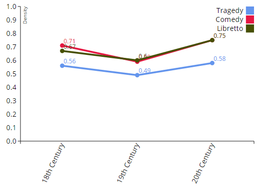

Digital Network Analysis of Dramatic Texts
Frank Fischer, Mathias Göbel, Dario Kampkaspar, Peer Trilcke
Göttingen Centre for Digital Humanities / Göttingen State and University Library / Herzog August Library Wolfenbüttel / University of Göttingen
Sydney, DH2015, 2 July 2015
(Presentation licenced under CC-BY 4.0.)
ToC
- Approach
- Data Mining
- Data Editing
- Display & Analysis
- Further Research
Approach
Basic Ideas
- following the tradition of structuralist approaches in Literary Studies (Barthes 1972, Lotman 1977, Titzmann 1977, etc.)
- basing it on automated data analysis
- long-term objective: provide structural data which can be used, for example, to describe different compositional types of plays
Approach
Different Styles of Structural Composition
Examples: two plays written by Goethe
 |
 |
| Iphigenie auf Tauris (1787) | Götz von Berlichingen (1773) |
Approach
The Digital Spectator
- combining Literary Studies with Social Network Analysis (many corresponding publications since early 2000s, see Bibliography)
- specific definition of structure (inspired by Solomon Marcus, 1973): two characters are linked to each other if both are performing a speech act in a given segment of a play (act, scene)
Approach
465 Network Graphs

At a glance: 465 German-language dramas from 1731 to 1929 (figshare).
Approach
Workflow
Data Mining → Data Editing → Display & Analysis
Data Mining
Corpus
- TextGrid Repository: biggest TEI-tagged corpus of German literary texts (contains 666 dramatic texts, cf. blog post)
- workflow optimised to work with problematic data (faulty TEI, bad OCR, etc.)
Data Mining
DLINA Corpus 15.07 (»Codename Sydney«)
- included texts only from 1731 to 1929
- excluded texts following these criteria:
- translations of foreign-language play
- texts w/o actual speakers (e.g., pantomime plays)
- fragments
- plays with very defective markup
- result: 465 dramatic texts (Sydney corpus)
Data Editing
Extracting Structural Data
- left the original TEI files untouched and only extracted the data we were interested in
- introduction of intermediary format ("zwischenformat", XML, cf. blog post):
- validated against a specific RNG schema
- zwischenformat file created for each drama
- stores metadata, structural data, documentation
Data Editing
Editing Process
Extracted structural data was still full of bugs:
- Errors due to automated conversion:
- OCR errors
- ...
- Intrinsic problems:
- variation of character names
- ...
Complete editing rules including examples can be found on our blog.
Data Editing
Outlook
Correction of structural bugs with crowd-editing approach:

Display & Analysis
One homepage for each of the 465 dramas linking to four types of visualisation + source files
(all individual pages listed here):
- networks (sticky-node and static)
- matrixes
- amounts
- intermediary format files
Display & Analysis
Example: G. E. Lessing's "Emilia Galotti" (1772)


Display & Analysis
Skit: The biggest chatterboxes in German literature

Cf. corresponding blog post.
Display & Analysis
Network size (median) by decade (1730–1930):

Cf. blog post "200 Years of Literary Network Data".
Display & Analysis
Network density (mean) by genre and century:
Upcoming blog post "Network Values by Genre".
Further Research
- more statistical data
- bigger (German-language) corpus
- foreign-language corpora
- to sum it all up: using literary network data to evaluate and contribute to traditional Literary Studies
Bibliography (1/3)
Literary Theory
- Roland Barthes, The Structuralist Activity, in: Roland Barthes, Critical Essays, Evanston, Il., 1972, 213–220.
- Jurij M. Lotman, The Structure of the Artistic Text, Ann Arbor 1977.
- Solomon Marcus, Mathematische Poetik, Frankfurt/M. 1973.
- Michael Titzmann, Die strukturalistische Tätigkeit. Theorie und Praxis der Interpretation, München 1977.
Social Network Analysis
- Stanley Wasserman & Katherine Faust, Social Network Analysis. Methods and Applications, New York 1994.
- John Scott & Peter J. Carrington (eds.), The SAGE Handbook of Social Network Analysis, London et al. 2011.
Bibliography (2/3)
Literary Studies & SNA
- Apoorv Agarwal et al., Social Network Analysis of Alice in Wonderland, in: Proceedings of the Workshop on Computational Linguistics for Literature, Montréal 2012, 88–96.
- David K. Elson, Nicholas Dames & Kathleen R. McKeown, Extracting Social Networks from Literary Fiction, in: Proceedings of the 48th Annual Meeting of the Association for Computational Linguistics, Uppsala 2010, 138–147.
- Franco Moretti, Network Theory, Plot Analysis, in: Stanford Literary Lab Pamphlets, No. 2 (May 1st, 2011).
- Wouter de Nooy, Stories, Scripts, Roles, and Networks, in: Structure and Dynamics 1 (2005), Nr. 2.
- Jeff Rydberg-Cox, Social Networks and the Language of Greek Tragedy, in: Journal of the Chicago Colloquium on Digital Humanities and Computer Science 1 (2011), Nr. 3.
Bibliography (3/3)
Literary Studies & SNA (cont'd)
- James Stiller, Daniel Nettle & Robin I. M. Dunbar: The Small World of Shakespeareʼs Plays, in: Human Nature 14 (2003), 397–408.
- James Stiller & Matthew Hudson, Weak Links and Scene Cliques Within the Small World of Shakespeare, in: Journal of Cultural and Evolutionary Psychology 3 (2005), 57–73.
- Peer Trilcke, Social Network Analysis (SNA) als Methode einer textempirischen Literaturwissenschaft, in: Philip Ajouri, Katja Mellmann & Christoph Rauen (eds.): Empirie in der Literaturwissenschaft, Münster 2013, 201–247.